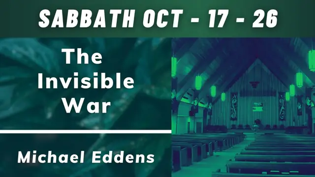
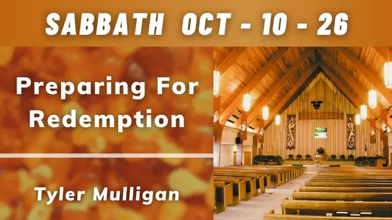
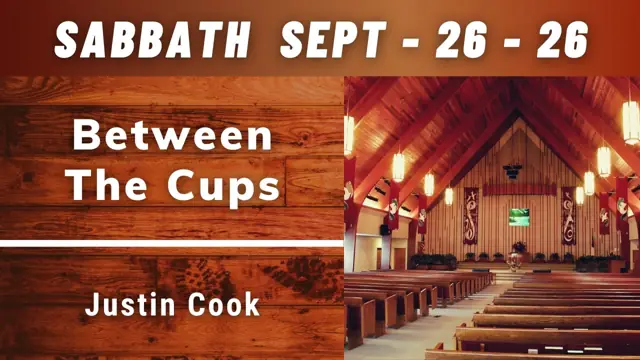
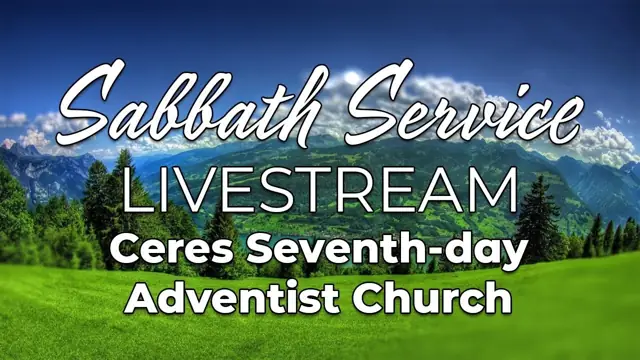
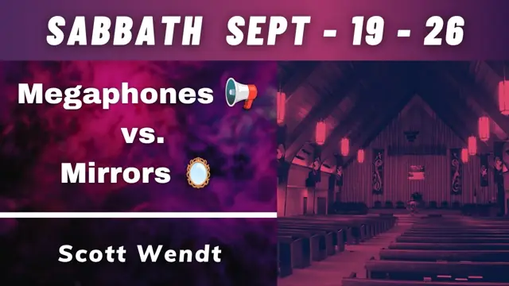
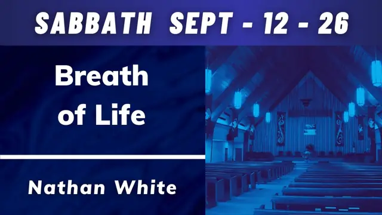

Live every Saturday
Watch live at 11:00 a.m.
Our Sabbath worship service streams live on YouTube every Saturday at 11:00 a.m. Pacific. The player shows our most recent uploads, including the current or latest livestream.
Tip for the live site: YouTube no longer supports a permanent “live” embed, so this uses the channel's uploads playlist, the set-and-forget approach Adventist Connect recommends.
Recent sermons

Oct 17, 2026
The Invisible War
Michael Eddens

Oct 10, 2026
Preparing for Redemption
Tyler Mulligan

Oct 3, 2026
Between the Cups
Justin Cook

Sep 26, 2026
Heart of the Shepherd
Anil Kanda

Sep 19, 2026
Megaphones vs Mirrors
Scott Wendt

Sep 12, 2026
Breath of Life
Nathan White